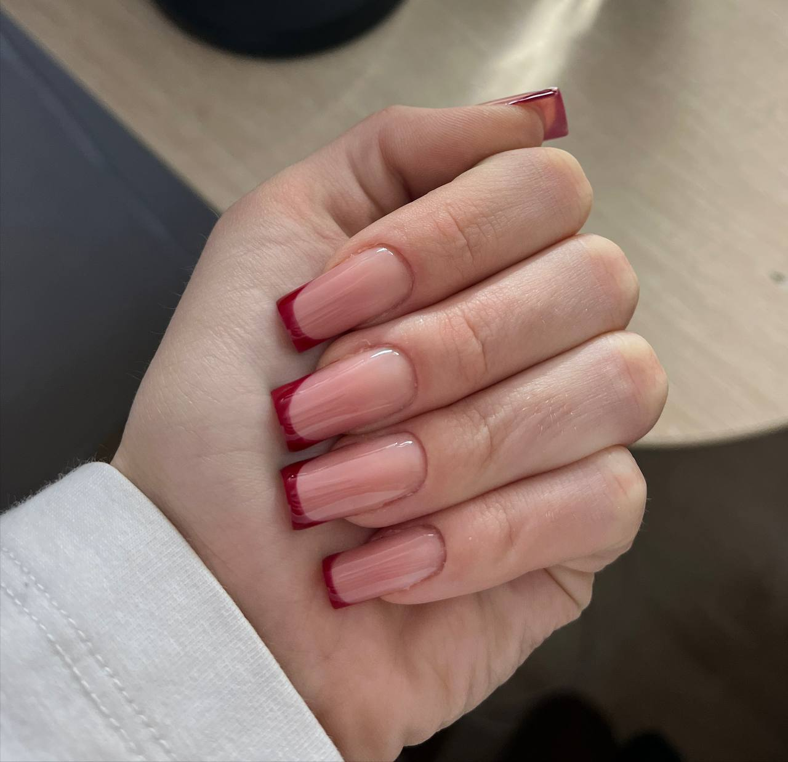
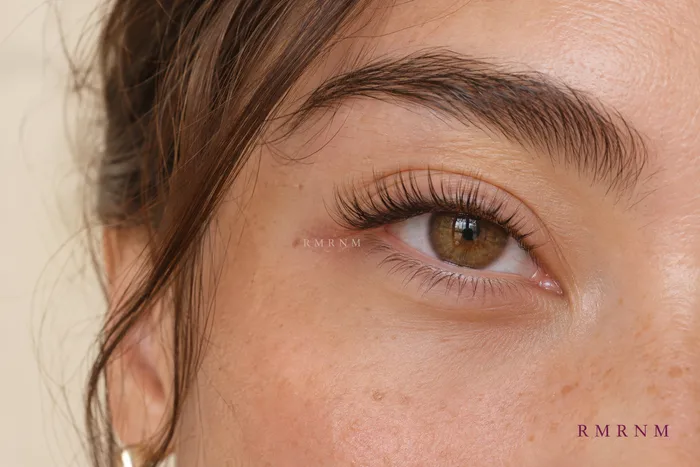
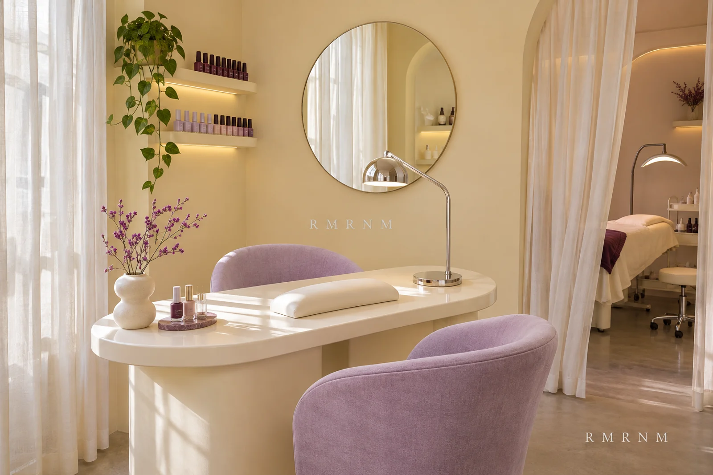

Маникюр без покрытия
Форма и аккуратный естественный вид · 60 мин
Аккуратный маникюр и выразительный взгляд.
Ваш маленький ритуал красоты — в nuá.


Выберите своё настроение
От лаконичного маникюра до мягкого объёма ресниц.
Один мастер — внимание к каждой детали.
Все цены и длительность показаны для демонстрации сайта.
Форма и аккуратный естественный вид · 60 мин
Ваш любимый оттенок или молочный нюд · 105 мин
Когда хочется другой длины и формы · 150 мин
Не обязательно знать заранее
Нюдовая база и винный акцент
Чёткая линия на мягком квадрате
Насыщенный цвет и объёмные детали
Лёгкость и красивая линия
Фотографии маникюра предоставлены автором портфолио. Образ ресниц — иллюстрация.
Мастер nuá также специализируется на наращивании ресниц. Выбирайте лёгкий акцент или чуть больше объёма — под настроение, а не по шаблону.
Красота без суеты
Выбрать оттенок. Рассмотреть референсы. Найти форму, с которой вам комфортно. В nuá маленькие решения складываются в ощущение «как же мне нравится».
Маникюр и ресницы — два отдельных ритуала. Их можно запланировать по очереди и посвятить это время себе.
Спланировать свой визит
nuá — ваше время для себяЕсли вы у нас впервые
Конечно. Фото помогает объяснить настроение, цвет и форму. В нашей галерее тоже можно выбрать образ — он появится в вашем плане визита.
В классике к одной натуральной реснице добавляют одну искусственную. В объёмном наращивании используют пучки из тонких ресниц. Классика выглядит сдержаннее, 2D добавляет мягкий объём.
В примере записи снятие можно выбрать отдельно. Все дополнения сразу входят в расчёт цены и времени — вы видите итог до последнего шага.
Такие процедуры у одного мастера планируют последовательно. В демоверсии выбирается одна основная процедура; реальный совместный визит нужно согласовать с мастером.
Маленький план для большого настроения
Выберите процедуру и желаемые детали.
Мы покажем, как может выглядеть ваш визит.
Цены, длительность и время — примеры для портфолио, а не доступность реального салона.